A satellite that only images eventually fails: imaging and slewing drain the battery and load the reaction wheels, eclipses interrupt charging, and external torques build up wheel momentum. The scheduler must interleave imaging with charging (pointing the solar panels at the Sun) and desaturation (dumping the wheel momentum), which earn nothing but keep the mission alive.
We extend the transformer-based HOP-PPO of the strip imaging work with one token per resource, so that strip selection and recovery are decided jointly. With the battery and the wheels, the policy survives 98% of the missions and earns 10.5% more than heuristic resource management. Because a neural policy comes with no guarantee, we then synthesize a probabilistic shield, learned from rollouts instead of reset sampling, which brings survival to 100% while changing only 4.5% of the decisions, against 14.6% for the heuristic.
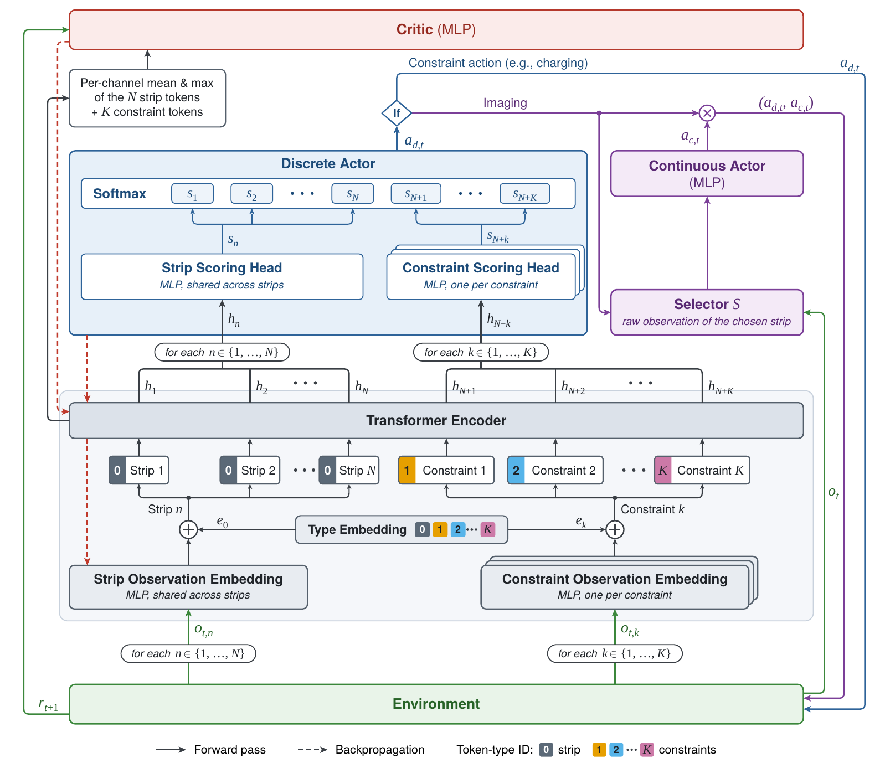
Each resource has its own observation: for the battery, the stored energy, the angle between the solar panels and the Sun, and the times to the next eclipse entry and exit; for the reaction wheels, the speed of each wheel. It is embedded into one more token of the transformer, with a type embedding that distinguishes it from the strips.
Through self-attention, every strip token sees the state of the resources, and every resource token sees the strips competing for time and energy. A scoring head per resource scores its recovery action, and one softmax chooses between the strips and the recovery actions. Adding a constraint only adds an embedding, a type vector and a scoring head.
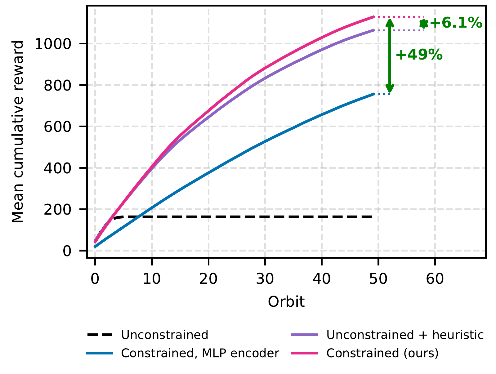
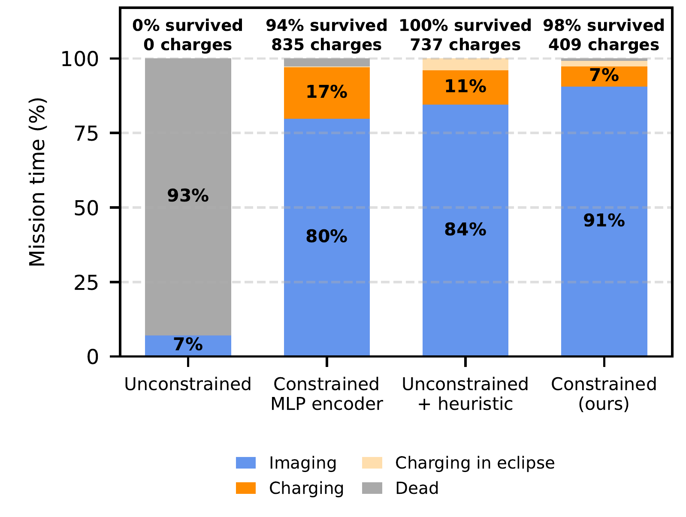
The policy trained without constraint dies in every mission. The constrained HOP-PPO survives 98% of them and earns 6.1% more than the heuristic wrapped around the unconstrained policy: it images 91% of the time against 84%, and charges 409 times against 737, mostly outside eclipses, where charging is wasted. The same policy with an MLP encoder survives 94% of the missions, and the transformer earns 49% more than it.
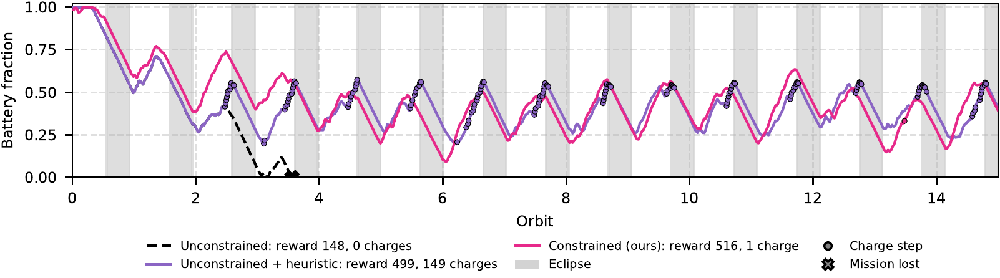
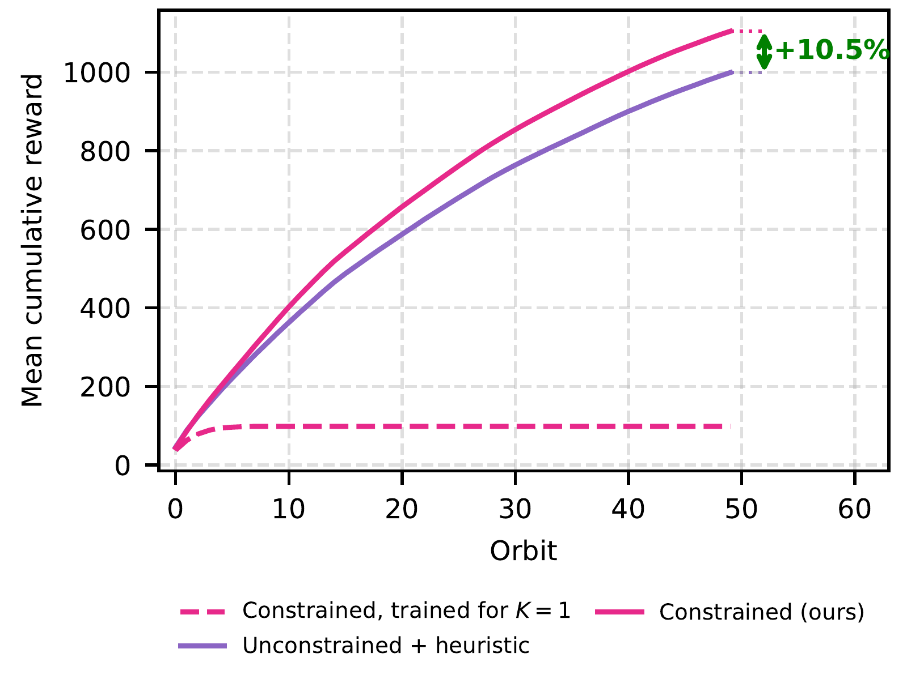
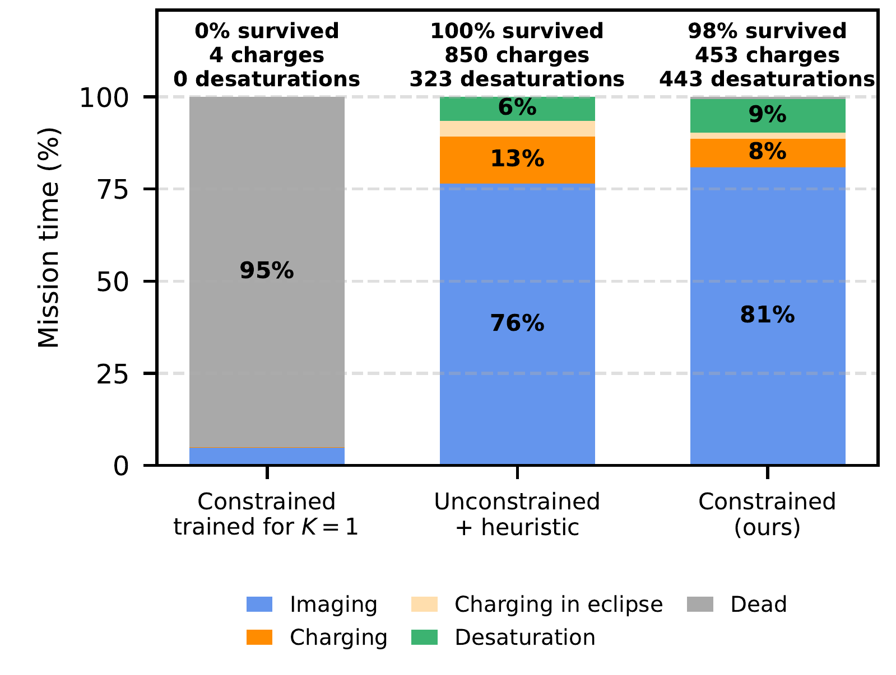
With two constraints, the policy again survives 98% of the missions and its gain over the heuristic grows to 10.5%: the coupling between strips and recovery actions becomes harder for one rule per resource. It desaturates more often than the heuristic (443 against 323 actions), which keeps the wheels slow and lowers the power they draw while imaging, so it charges half as often (453 against 850) and images 81% of the time against 76%.
A shield filters the actions of the policy at execution time. It works on a small safe MDP that abstracts the variables driving a constraint, here the battery level, the eclipse flag and the time to the next eclipse entry or exit. For each abstract state and decision (image, or recover), the safety Q-value is the probability of eventually depleting the battery if that decision is taken and the safest decisions follow. The proposed action passes if this probability is within a tolerance (0.1% for the learned shield below), and is otherwise replaced by the safest one.
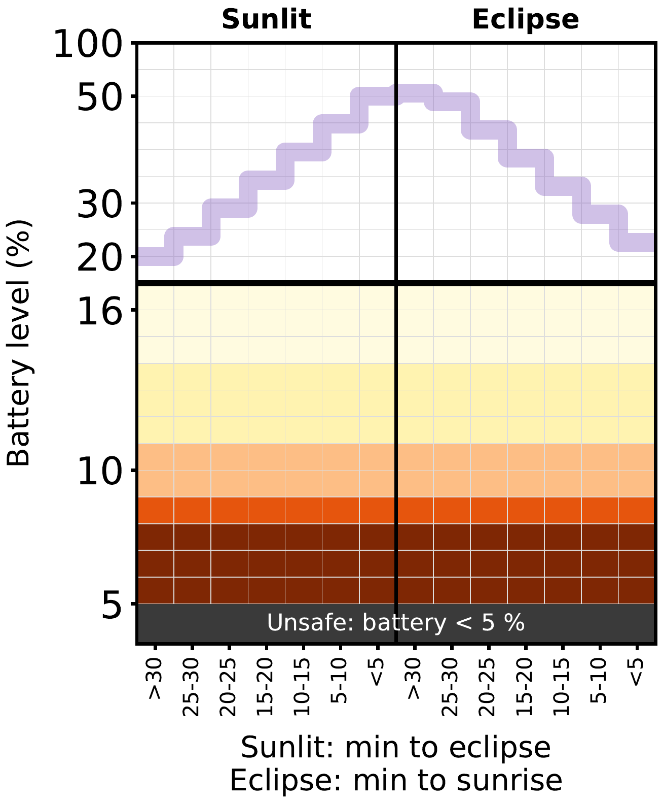
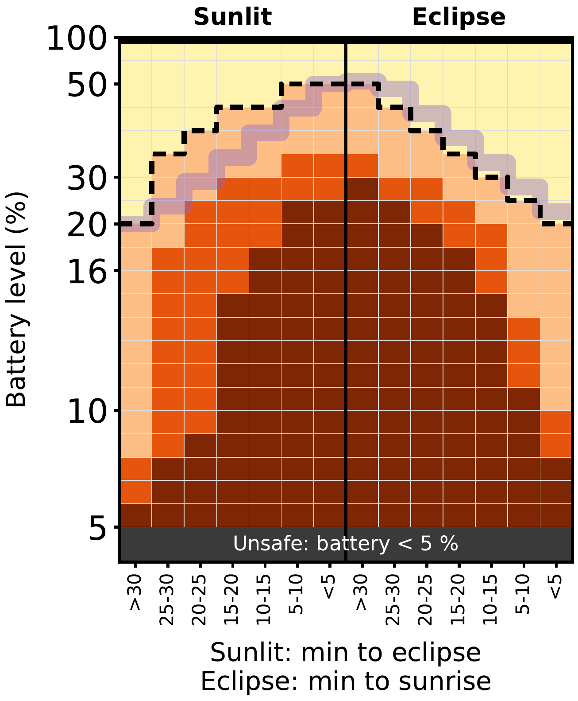
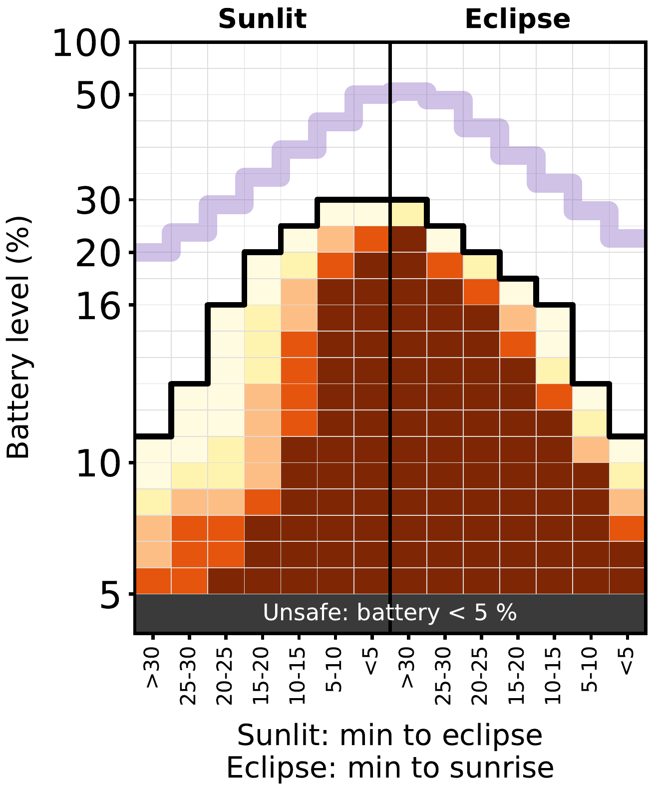
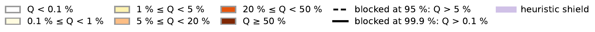
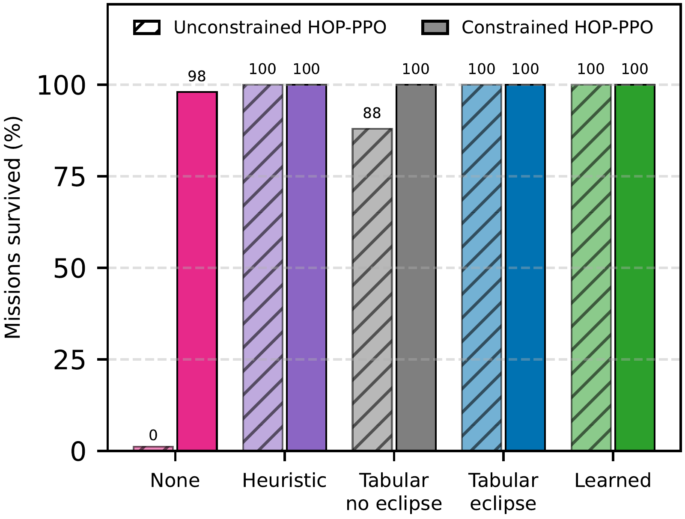
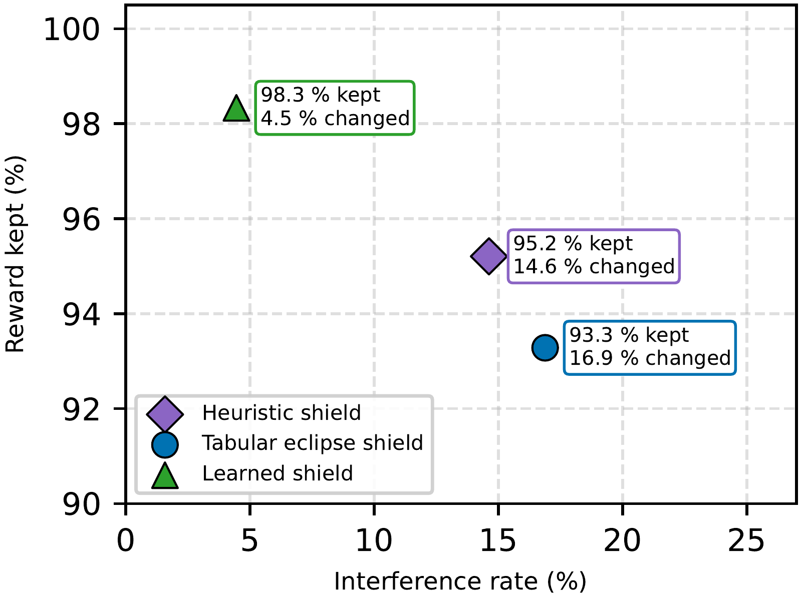
Every eclipse-aware shield, and the heuristic, keeps 100% of the missions alive; the shield that ignores eclipses loses 12% of them. They differ in how much they interfere: on the constrained policy, the learned shield changes only 4.5% of the decisions and keeps 98.3% of the reward, against 14.6% and 95.2% for the heuristic, and 16.9% and 93.3% for the eclipse-aware tabular shield. It intervenes about three times less often, and only where depletion is likely.